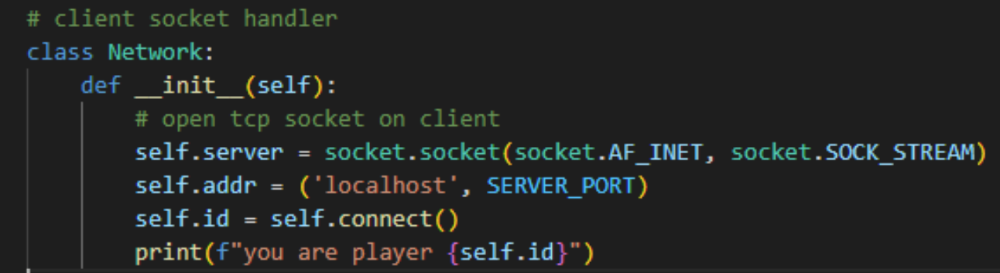
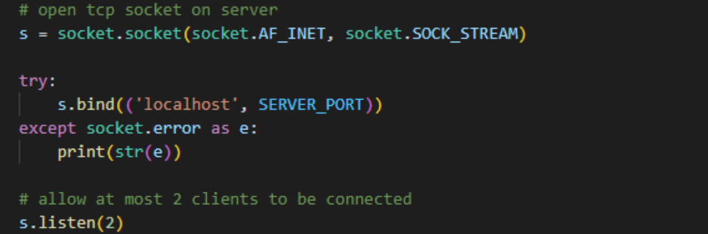
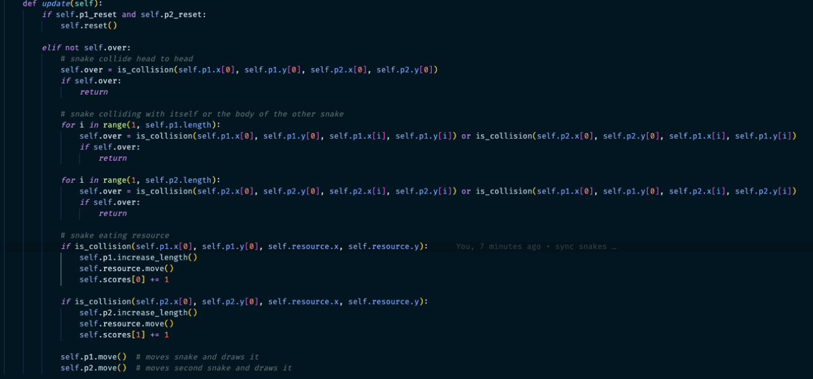

About Me
I am a game developer with expertise in C#, Unity, and C++ with 2+ years of experience, who is passionate about crafting immersive gaming experiences. From contributing to a multi-platform live service mobile game, Tap Titans 2, to exploring the potential of virtual reality in emotion regulation, my journey reflects a commitment to pushing boundaries in game development. Whether leading projects, collaborating with diverse teams, or scripting engaging AI and gameplay mechanics, I thrive on transforming ideas into captivating interactive worlds. I am based in Burnaby, BC, Canada.

Projects
Guardian of the Forest [Unity, C#]
In this atmospheric 2D soulslike side-scroller which draws inspiration from titles like Blasphemous, I served as the lead programmer in a 5-member team. My responsibilities encompassed crafting the player and enemy controllers, finite state machines for both player and enemies, enemy AI behaviour and developing the combat mechanics. As the architect behind the combat system, I designed features for hit registration, damage calculation, and item drops. Additionally, I transformed our artists static sprites into animations and tilemaps, contributed to level design, and constructed the game environments.
-
Key Features:
- Wall jumping & sliding
- Dash dodge mechanic
- 3 hit melee combo & ranged attacks
- Shield & attack portal spells
- Unique enemy AI behaviour
- Coyote time to improve the jumping experience
- Hit stops and camera shake to make combat feel more impactful
- Enemy drops and fly-in pickup on proximity
- Waypoint system
- Utilization of tilemaps and spritesheets
- Persistence of player information and game state across multiple Unity scenes
Game Design Document
GitHub Repo
ForeSight [Unity, C#, VR]
VR project where I was the lead programmer designed to make the player reflect on humanity’s devastating impact on nature and its habitants, as well as motivating the player to be proactive about the health of our environment in the present. Through the unique mechanic of switching between present and future timelines, players will be able to see and interact with a desolate environment that was once beautiful and lively. The friendly fox companion also suffers the same fate as the environment between timelines.
-
Key Features:
- VR controls including headset and handheld tracking, along with custom controls
- Timeline switching mechanic
- Fox companions AI behaviour
- Robot AI behaviour
- Post processing effects
Game Design Document
WebGL Tetris [JavaScript, WebGL, HTML, CSS]

I created this WebGL Tetris game for my computer graphics course, blending classic Tetris gameplay with modern rendering concepts. Using JavaScript and Object-Oriented Programming (OOP), I implemented features like random tetromino generation, smooth movements, and rendering with WebGL.
-
Key Features:
- Implemented a system for generating and placing tetrominoes randomly using JavaScript and OOP techniques
- Created functions for checking the validity of a tetromino's position on the game board
- Implemented game mechanics, including block movement, rotation, and line clearing
- Designed a system for converting Tetromino positions and colors into efficient 1D buffers, optimizing rendering performance
GitHub Repo
Multiplayer Snake Game [Python, TCP]
Made an online multiplayer game where two players control snakes in a shared 2D grid, consuming diamonds to grow and score points.
The game introduces strategic gameplay, and the objective is to outscore the opponent while avoiding collisions.
Client socket:

Server socket:

Handling shared object:

-
Key Features:
- Implemented a client-server network architecture to separate the responsiblities of managing the game state/handling shared resources from displaying UI/receiving inputs
- Client code responsible for obtaining player inputs and sending them to the server, along with receiving game state from server and displaying it on screen
- Server code that enables one of the players to act as the server, accommodate up to two connections, managing game state, shared resources and player interactions
GitHub Repo
Catch'Em [Java, XML]
A Pokemon-themed Mine Seeker game where players tap cells to catch randomly placed Pokemon. Inspecting cells reveals hidden Pokemon counts in the same row and column, helping players make strategic choices. The objective is to catch all Pokemon with the fewest scans.
-
Key features:
- Options menu that allows for different board sizes and number of mines
- Number of games played and high scores are saved for each possible configuration between application runs
- Model-View-Controller (MVC) pattern used to keep game logic separate class from game UI
GitHub Repo